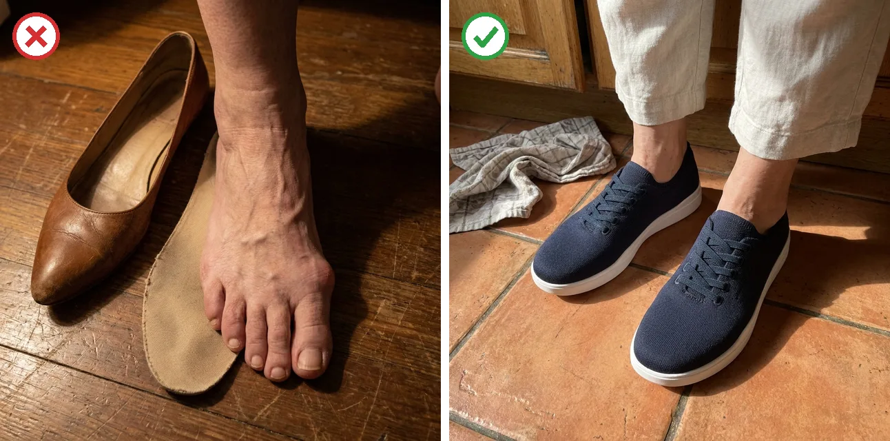
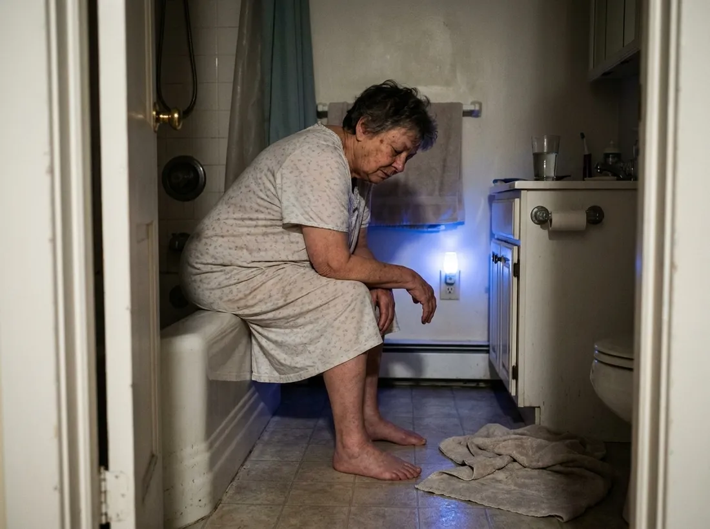
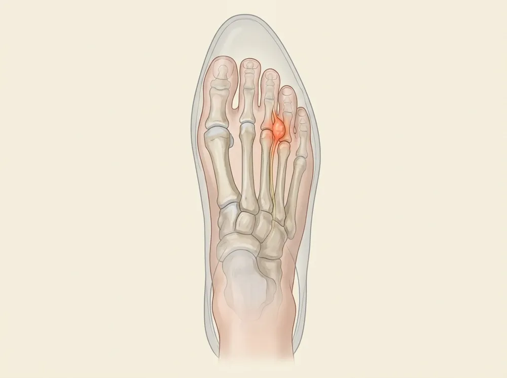
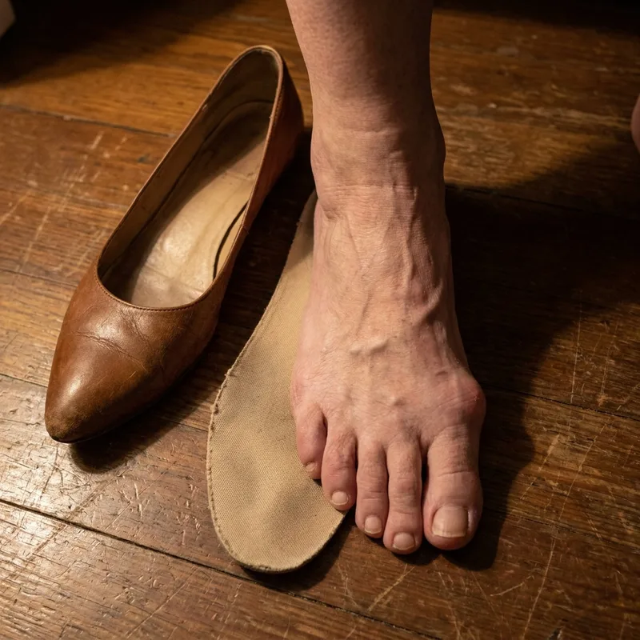
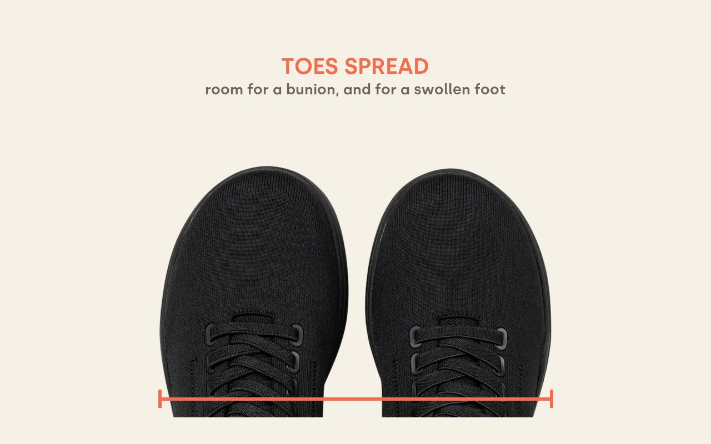
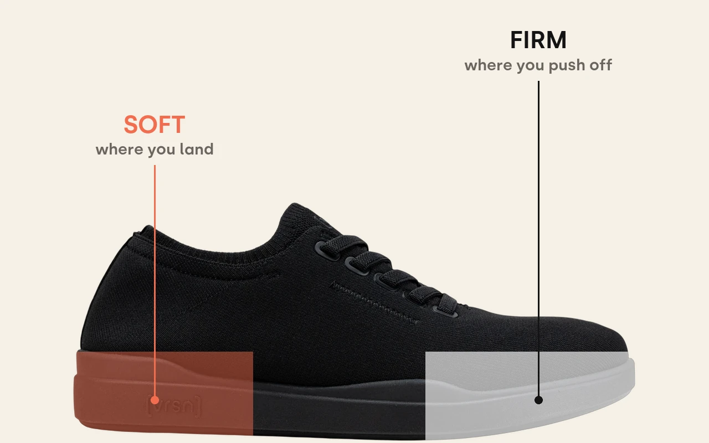
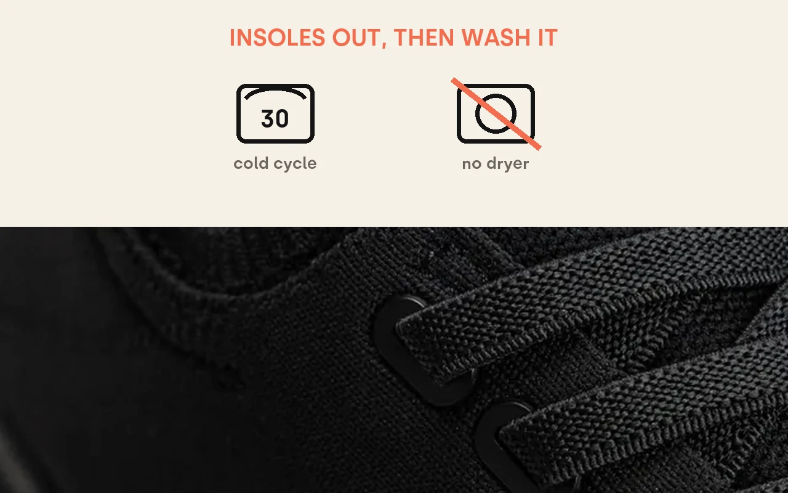
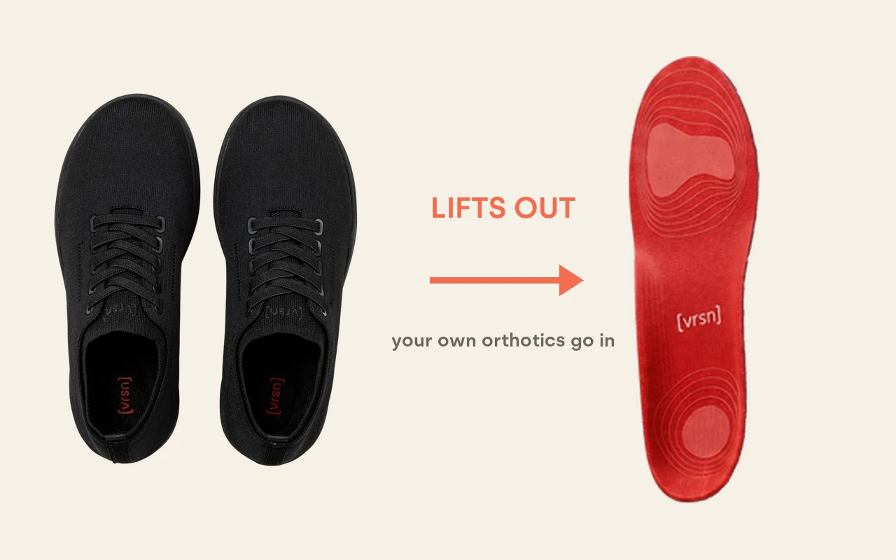
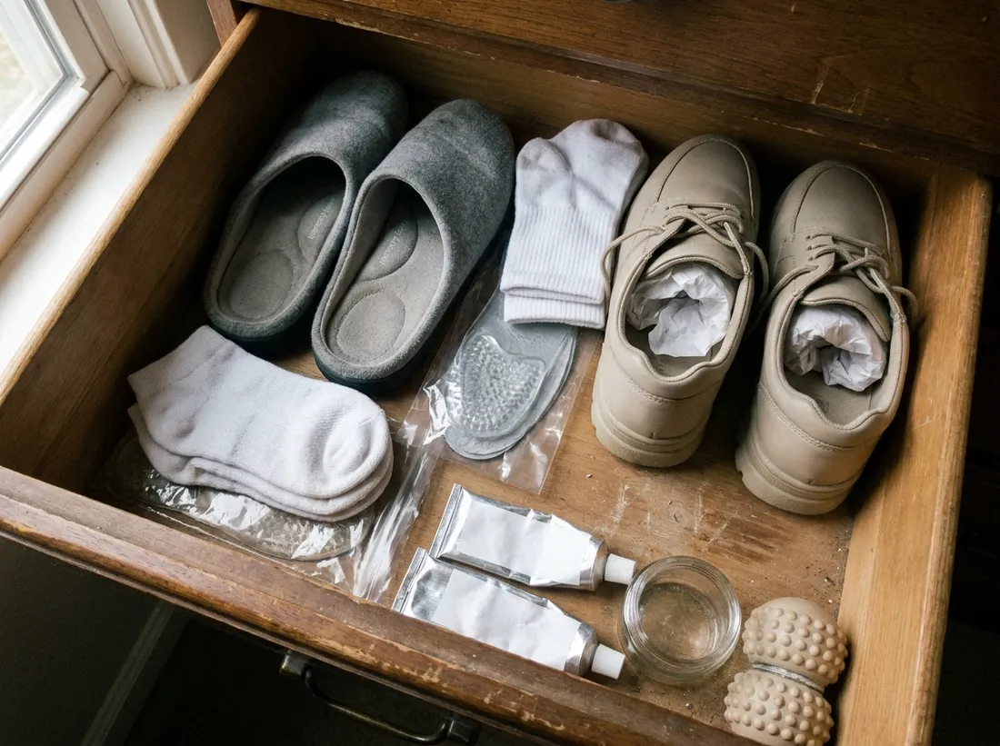
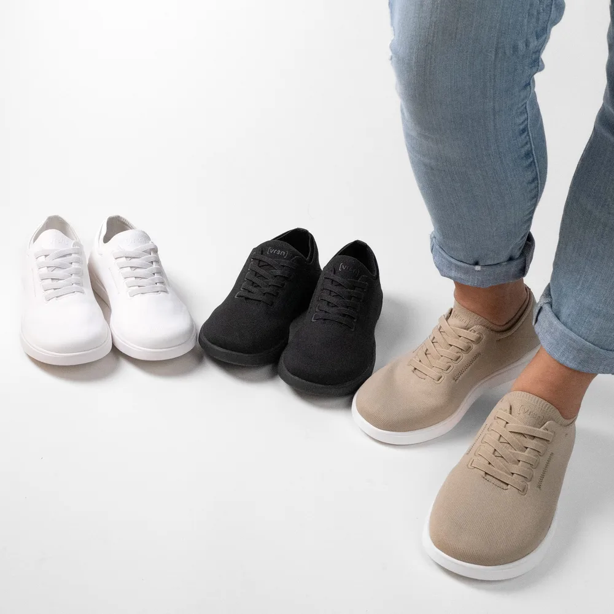

My Neuropathy Is Real. But My Shoes Were Making the Burning Worse.
A 67-year-old on the one question three years of appointments never asked, and the free 10-second test you can do on your own shoes tonight (no new prescription, no appointment, no gadget)

Left: my foot on the insole from the shoes I wore every day. Right: what I wear now.
I'm about to say something my neurologist won't love hearing.
Not because he's wrong. He's a good doctor, and my nerves really are damaged. I have the test results to prove it.
But after three years of feet that burned like I'd walked across a hot parking lot barefoot.
After a dresser drawer full of creams, padded socks and "comfort" shoes that did nothing.
After my husband Ray learned to sit at the other end of the couch, because one brush against my feet made me flinch.
I found out part of what I was feeling was being made worse by something I could change.
And if you're reading this with feet that burn at night, taking gabapentin at bedtime, or sleeping with one foot stuck out from under the sheet because it's the only way you can stand it:
the next eight minutes might change how you look at your shoes.
My name is Diane. I taught third grade for 31 years. I'm not a doctor and I'm not going to pretend to be one. I'm going to tell you what happened to me, what a foot doctor showed me, and the test you can do tonight with the shoes you wore today.
But first, the night I stopped pretending I was fine.
The night I stopped pretending

It was 2:15 in the morning on a Thursday.
Ray found me sitting on the edge of the bathtub with my bare feet flat on the tile. The tile is the only cold thing in our house at that hour.
I wasn't crying. I was past crying.
The burning had started around ten, the way it did most nights. Pins and needles in my toes. A hot, raw feeling across the balls of my feet. And that strange one I could never explain to anybody: like I was standing on a pebble, except there was no pebble.
"Go back to bed," I told him. "There's nothing you can do."
That was the worst part. There really wasn't.
I'd done everything I'd been told to do.
- My neurologist? Diagnosed me with peripheral neuropathy, no known cause. Started me on gabapentin and raised it twice. It takes the edge off, and I'm glad I have it.
- My family doctor? Checked my B12, my thyroid, my blood sugar. All fine, which was good news that didn't help.
- The internet? Creams, socks, foot soaks, a massage ball, vitamins. Every one of them is in that dresser drawer now.
Everyone agreed on one thing. It's the nerves. You manage it. You learn to live with it.
So I did. I stopped the walk after Sunday dinner. I slipped my shoes off under every restaurant table. I bought an 8 and a half when the 8s pinched.
And I never once thought about the shoes themselves.
The question nobody had asked
I ended up at a podiatrist for something that had nothing to do with my nerves. A corn on my little toe that wouldn't quit.
She looked at the corn. Then she looked at the shoe I'd walked in with. Then she asked the question nobody in three years had asked me:
"When did you last have your feet measured?"
I honestly couldn't remember. The 1990s, maybe.
She measured me. I'd been buying an 8, sometimes an 8 and a half. My foot measured a 9, and wide.
"Most people haven't been measured since they were young," she said. "They just keep buying the size they've always bought."
It turns out I was completely normal. When researchers pulled together 18 studies on shoe fit, between 63 and 72% of people were wearing shoes that didn't fit the length or width of their feet. And in a study of 568 people with diabetic neuropathy, average age 64, more than two thirds of the feet measured were considerably broader than ordinary shoes. In a U.S. veterans' clinic, average age 67, only about 1 in 4 patients were wearing correctly sized shoes.
Then she said the thing that changed how I thought about all of it.
"Your neuropathy is real. But that doesn't mean every bit of burning you feel is coming from it."
What she showed me

Between the long bones of your foot, right behind the toes, run small nerves out to each toe.
Squeeze the front of the foot into a shoe that's too narrow, and it puts pressure on the toes and the nerves between them, with every step, all day long.
Doctors have names for what can go wrong there. The best known is Morton's neuroma, a damaged, enlarged nerve, usually behind the third and fourth toes.
And here's what stopped me cold. Mayo Clinic lists its symptoms as burning pain in the ball of the foot, pins and needles, tingling or numbness in the toes, and a feeling like walking on a marble or stone. The NHS describes it as feeling like a pebble is stuck under your foot. Mayo also says narrow shoes can make it worse, and the pain is often relieved with rest or by removing your shoes.
The pebble. The one I could never explain to anybody. And taking my shoes off under the table, every single time.
Burning. Tingling. Numb toes. A pebble that isn't there. That's a list a person with neuropathy would recognize instantly, because it's so close to our own.
The difference is where it comes from. One starts deep in the nerves. The other is a nerve being pressed, and tight shoes make it worse.
And you can have both at the same time.
Why I never felt the squeeze
Here's the part that made me sit down in that office.
You know how your wedding ring slides on fine in the morning, and by evening you can't twist it off? Feet do the same thing. It's why the CDC says to try on shoes at the end of the day, when your feet tend to be largest. Your shoes don't get any bigger.
A person with healthy feet feels that by four in the afternoon. They kick the shoes off and buy a different pair.
But neuropathy dulls the feeling in your feet. So the one warning that should have told me my shoes were too small was the warning my feet could no longer send.
The American Diabetes Association puts it bluntly: "You could have a tack or stone in your shoe and walk on it all day without knowing." The international diabetic-foot guidelines say people who have lost feeling "may not adequately judge the fit of their footwear."
That's why Mayo Clinic tells people with neuropathy to check their feet every day. You can't trust the feeling. You have to look.
I had been looking at my feet. I just never looked at my shoes.
Why nobody had told me
I was angry for about a day. Then I understood it.
It isn't a conspiracy. Nobody is hiding anything. It's simpler and sadder than that.
Nobody's job is your shoes.
My neurologist's job is my nerves. My family doctor's job is my blood work. My pharmacist's job is my prescriptions. Not one of them ever saw me standing up.
So the loop just keeps going:
Nothing in that loop ever changes the shoe.
Even the government's drug information page says gabapentin "may help to control your condition but will not cure it." That's not a reason to stop taking it. I'm staying on mine. It's a reason to look at everything else, too. Medicine works on the nerve signal. Nobody in that loop ever looked at the shoe.
The 10-second test hiding in your closet
Before I left, she showed me how to check any shoe I own. It takes ten seconds and costs nothing.

This is what a squeeze looks like: the foot is wider than the insole it lives on all day.
- Pull the insole out of the shoes you wore today. Most lift right out.
- Put it on the floor and stand on it barefoot, full weight, the way you stand at the kitchen counter.
- Look down. If your toes or the sides of your foot hang over the edge, that shoe is squeezing you every step you take in it.
Try it in the evening, when your feet are at their biggest.
I did it that night with my everyday walking shoes. My little toe and the whole outside edge of my foot sat on the floorboards. That's the photo above.
I'd been wearing them for six years.
What I needed was three things at once
The podiatrist didn't sell me anything and didn't name a brand. She gave me a short list of what to look for, and told me a shoe needs all of it at the same time:
1. Room. A toe box wide enough that your toes and the ball of your foot aren't pressed together. Your foot should sit inside the insole, not on top of the edges.
2. A soft landing. Real cushioning under the heel and the ball of the foot, because that's where every step lands.
3. Something you'll actually wear all day. Because a good shoe in the closet does nothing. Your feet go straight back into the squeeze.
Miss any one, and you're back where you started. Which, when I thought about it, explained my whole dresser drawer:
- My walking shoes had cushion. (No room.)
- The memory-foam slippers were soft, but you can't wear slippers to the pharmacy. (Not all day.)
- The wide orthopedic lace-ups had room and cushion. I wore them twice. I wouldn't be seen at church in them. (Not all day.)
Later I looked it up. The NHS gives almost the same advice for a squeezed nerve in the foot: "wear wide, comfortable shoes with a low heel and soft sole." Mayo Clinic's self-care advice for neuropathy includes "padded shoes."
I needed all three. In one shoe. That I'd put on every morning without thinking about it.
What I found when I went looking
Ray did the searching. He read reviews out loud to me at the kitchen table for a week.
The pair I ended up with is the [vrsn] Pain Relief Sneaker. I'll be honest about why it won: it's podiatrist approved, and it was the only one on our list that checked all three boxes and didn't look like it came from a medical supply catalog.

1. Room
A wide toe box comes standard, not as a special order. My toes sit side by side, nothing pressed together.

2. A soft landing
A two-layer midsole: soft where your heel lands, firmer where you push off, so it's cushioned without feeling mushy.

3. All day
A soft knit sneaker that looks like a normal shoe, with zero break-in, and it goes in the washing machine. So I actually wear it, every day.
The part I have to be honest about
I'm going to say this plainly, because I wish someone had said it to me.
A shoe doesn't fix nerves.
My neuropathy is still here. I still see my neurologist. I still take my medication. I still check my feet every night.
What a shoe can do is stop adding a second problem on top of the first one. It can stop squeezing.
So here's what I'd tell anyone with burning feet, if they asked me at the grocery store:
- Not every burn is the same burn. Some of it can come from a nerve being pressed, and pressure is something you can change.
- The shoe size you bought at 40 may not be your size at 67. Get measured.
- Numb feet can't tell you a shoe is too small. You have to check.
- You can check tonight, for free. Pull the insole. Stand on it.
Introducing the shoe I wear now
It's called the [vrsn] Pain Relief Sneaker. It's podiatrist approved, and here's what's in it:
- A wide toe box, standard on every pair, so the front of your foot isn't pressed together
- A two-layer midsole, soft under the heel and firmer under the forefoot
- A contoured arch
- A removable insole, so if your doctor gave you orthotics, yours drop right in
- A soft knit upper that goes in the washing machine
- A slip-resistant outsole on tile, wood and concrete
- Zero break-in, comfortable the first morning

No appointment. No new prescription.
Room. Cushion. All day.
Check today's price →What the first day felt like
7:15 a.m.
I put them on standing at the kitchen counter. No shoehorn, no wiggling. For the first time in years my toes weren't touching the sides of anything.
2:00 p.m.
Grocery store, then the pharmacy. This is the hour my feet swell and my shoes start to pinch. There was still room. I checked twice, because I didn't believe it.
8:30 p.m.
Couch, news on. Usually the very first thing I do is kick my shoes off. I looked down at nine and realized I'd forgotten I had them on.
That night I pulled the insole out and stood on it. My whole foot sat inside it.
Did my neuropathy go away? No. I want to be clear about that, because I'd be furious if someone promised me that and it wasn't true.
What changed is that nothing was squeezing my feet anymore. By evening there was still room in my shoes, and when I checked my feet at night, there was no red mark across my little toe.
What changed, and what didn't
of the 2,500+ reviews of this shoe on the [vrsn] store are five stars.
Before:
- ✕I slipped my shoes off under every restaurant table
- ✕I sat out the walk after Sunday dinner
- ✕I went up half a size when shoes pinched, and they still pinched
- ✕By four in the afternoon, all I could think about was getting my shoes off
- ✕I had a red mark across my little toe every night when I checked my feet
Now:
- ✓My shoes stay on through dessert
- ✓Ray and I walk to the end of Maple Street and back after dinner
- ✓I wear the same pair to church, to the garden and to the grocery store
- ✓At four in the afternoon, there's still room in my shoes
- ✓When I check my feet at night, there's no red mark
Here's what a few other people wrote about room and fit in their reviews on the [vrsn] store:
"A friend recommended [vrsn] to me because of the neuropathy in my feet, and I'm glad they did. The comfort and support have been exactly what I was looking for."
"My feet tend to swell during long 12-hour shifts, so the roomy toe area has been a blessing. At the same time, I still get the arch support I need. It's hard finding shoes that do both well, but these really deliver."
"These have been such a blessing. One of my feet swells from chronic lymphedema, and these fit comfortably without squeezing. Love the slip-on style and the colors too. Just ordered my second pair for spring!"
What I'd already spent

Ray made me add it up. Here's my dresser drawer:
The drawer
None of it was a scam. Each thing did what it said. None of it did all three things at once, so none of it stayed on my feet.
The [vrsn] sneaker lists for $129 a pair.
That's not what you'll pay today.
Up to 47% off, and why I bought two
One pair: $129 $79
That's 39% off, with free shipping.
But here's what I did, and what I'd tell my sister to do:
Buy one pair. Get the second for $58.
At checkout that shows as 2 pairs at $68.50 each: $137 instead of $258. That's $121 off, or 47%.
I wear one pair while the other one airs out or goes through the wash. Feet that sweat or swell do better with a dry pair every morning, and I never end up back in my old shoes "just for today."
Check today's price →But here's the catch (three of them)
I'd rather you hear these from me than find them out after.
One: there are no half sizes. The store says they run true to size, and if you're between sizes, take the size up. If you haven't been measured in years, do that first, or at least do the insole test. Exchanges are free.
Two: it's a sneaker. A good-looking one, but a sneaker. If you need something for a black-tie wedding, this isn't it. For everything else I do in a week, it is.
Three: the sale price is theirs, not mine. I don't know how long they'll keep it. When I last checked, the store said "Offer expiring soon," and shipping dates had moved out to about a week.
And every night you wait is another night in the same shoes:
- Another day in shoes that might be too small, without knowing it
- Another evening of shoes off the second you sit down
- Another 2 a.m. wondering how much of this is the nerves, and how much is something you could have changed
The 100-day at-home trial
trial
Look, I get it. You've tried things before. So have I. I have a drawer to prove it.
So here's what made me willing to try one more thing:
Every pair comes with a 100-Day At-Home Trial. If they're not right for you, you send them back for a full refund. Returns are free. Exchanges are free too, so if the size is off, a swap costs you nothing.
One hundred days is a long time. That's enough to know, in your own house, on your own floors, on your own worst evenings.
The choice in front of you tonight
Path #1: Keep doing what you're doing
Same shoes. Same drawer. Same loop. Treat the nerves, which you should keep doing, and never ask whether something on your feet is making it worse.
Path #2: Take the squeeze off
Keep your doctor. Keep your medication. Keep checking your feet. And take away the one thing pressing on them that you have complete control over, starting tonight.
When I put it to myself that way, it wasn't a hard choice.
Here's exactly what to do next
- Tonight, do the insole test. Pull the insole out of the shoes you wore today. Stand on it barefoot. Look down.
- If your foot spills over, tap the button below and pick your size. True to size. Between sizes, size up.
- Pick two pairs if you can. $68.50 each, and you'll never have a reason to go back to the old ones.
- Wear them around the house the first day. Then do the insole test again with theirs.
- Keep checking your feet every night, the way your doctor told you. That part never changes.
Don't leave it for later. Later is another evening with your shoes off under the table.
Check today's price →With love from one burning-feet club member to another,
Diane
P.S. Ray did the insole test on his own shoes after he watched me do mine. His foot hung over too. He's in a pair now, and he reminds me every evening that he found the shoe.
P.P.S. If your burning is mostly in your toes and the ball of your foot, if it feels like standing on a pebble or a fold in your sock, or if it gets worse in shoes and eases when you take them off: tell your doctor about it, and check your shoes. That's not a diagnosis. It's a question worth asking.
P.P.P.S. Do the insole test even if you never buy a thing from anyone. It's free, it takes ten seconds, and it's the most useful thing anyone told me in three years.
Check today's price →Up to 47% off + free shipping

Customer reviews
What other buyers said
From reviews on the [vrsn] store. Lightly corrected for spelling only.
My feet swell quite a bit, and after knee surgery one leg is slightly longer than the other. These shoes have been incredibly comfortable and work really well for my situation.
June 2, 2026One thing I noticed right away is that I never feel desperate to take them off at the end of the day. My feet stay comfortable from morning until night, which is something I can't say about most shoes I've owned.
April 29, 2026I've been able to wear these all day comfortably, but I would recommend going up a size. The toe box is roomy, but my toes still touch the front when wearing thicker socks.
April 23, 2026This is my 4th pair, so that probably says enough. Great support through the arch, heel and ball of my foot.
April 22, 2026Important: [vrsn] sneakers are footwear, not a medical device. They are not intended to diagnose, treat, cure or prevent any disease, including peripheral neuropathy or Morton's neuroma. If you have neuropathy or diabetes, check your feet every day and talk to your doctor or podiatrist about your footwear. See a doctor for numbness, burning, swelling that does not settle, sores, or pain that wakes you at night.
Customer reviews are quoted from vrsn.co with spelling corrected. Sources are listed below.
Sources: Mayo Clinic, Morton neuroma and Peripheral neuropathy: diagnosis and treatment · NHS, Morton's neuroma · American Diabetes Association, Foot complications · CDC, Your Feet and Diabetes · IWGDF 2023 Guidelines on the prevention of diabetes-related foot ulcers (Bus et al., Diabetes Metab Res Rev 2024) · Buldt AK, Menz HB. Incorrectly fitted footwear, foot pain and foot disorders: a systematic search and narrative review. J Foot Ankle Res 2018 · Chantelau E, Gede A. Foot dimensions of elderly people with and without diabetes mellitus. Gerontology 2002;48:241-4 · Nixon BP, Armstrong DG et al. Do US veterans wear appropriately sized shoes? J Am Podiatr Med Assoc 2006 · MedlinePlus, Gabapentin.